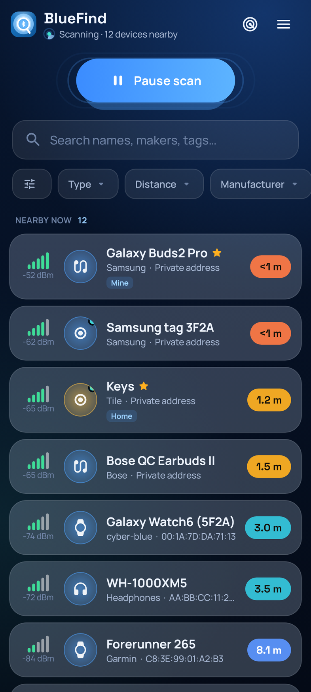
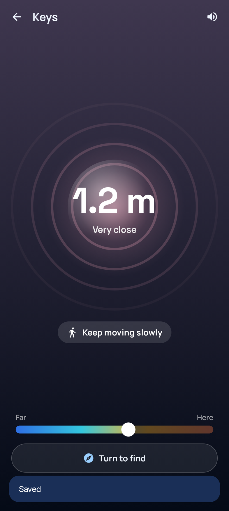
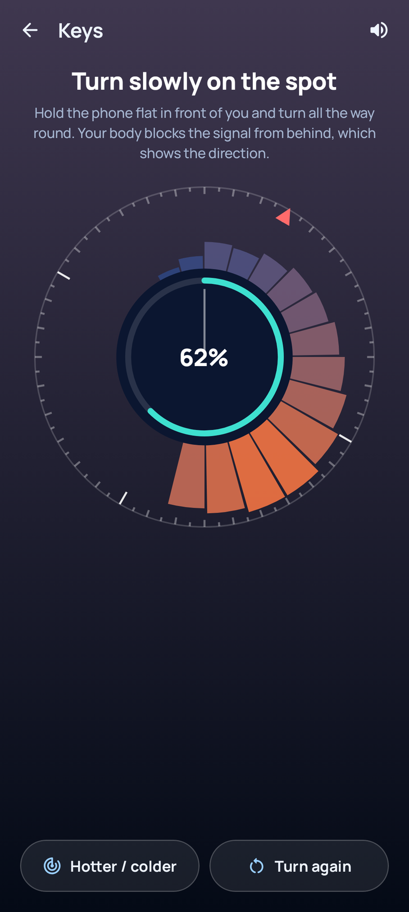
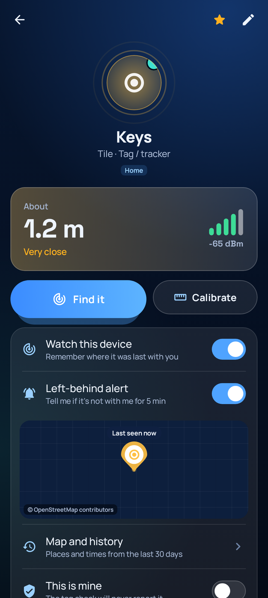
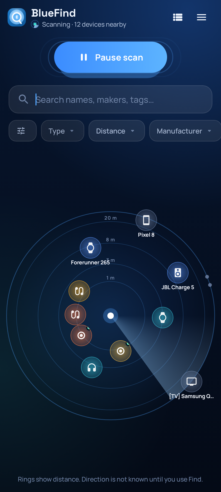
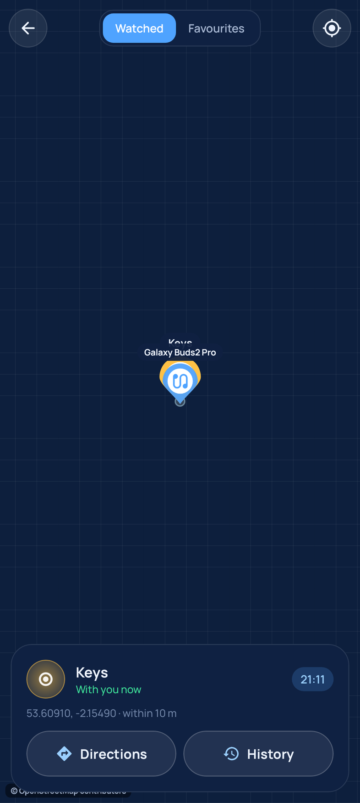
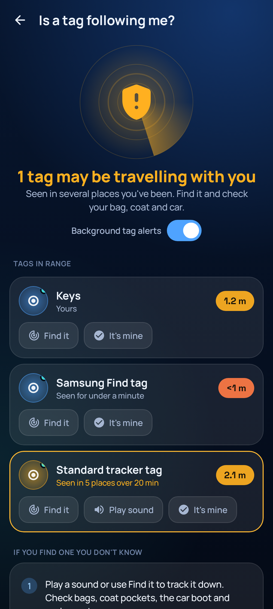
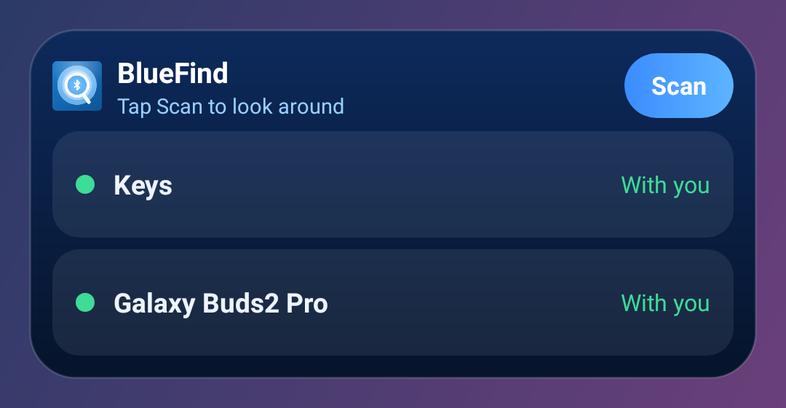

Lost it nearby? Follow the signal.
BlueFind lists every Bluetooth device around you, from earbuds and headphones to tags, watches, speakers and car kits, with the maker and a distance for each. Pick the one you lost and walk towards it: the screen glows warmer, clicks faster and buzzes harder as you get closer.
Watch the things you care about and BlueFind remembers where they were last with you, warns you if you walk away without them, and checks whether someone else's tag is travelling with you.
BlueFind shows Bluetooth devices that belong to other people. What the law says
- Version 1.0.2
- Android 8 or later
- 2.6 MB
Free, with nothing to unlock. No adverts, no account with the developer, no tracking. Compare or read the release notes.
Chrome may say the file might be harmful. It shows this for app files that do not come from Google Play. Choose Download anyway.

- No advertsNone in the app and none on this site.
- Nothing to buyEvery feature is free, with nothing locked.
- No accountNothing to sign up for.
- Stays on your phoneYour devices, places and history never leave it.
A look inside
These are the real screens, drawn from the app's own code with made-up devices. Swipe or scroll sideways to see them all.







How it works
Every Bluetooth device sends out a short signal several times a second. BlueFind listens for those signals, works out who made each device, and turns the strength of the signal into a distance.
Scan
Open BlueFind and it starts listening. Devices appear within seconds, with the nearest at the top. Earbuds and watches that are connected to a phone may stay quiet until they are disconnected.
Pick yours
Search or filter by type, maker, distance or signal. Give it a name, a colour and tags so it is easy to spot next time.
Follow it
Tap Find. Walk slowly and watch the glow, or turn on the spot and let the dial point the way. Calibrate it at one metre for a better distance.
Everything is in, and all of it is free
Nothing below is held back for a paid tier, because there is no paid tier.
Finding
- Hotter and colder
- A full-screen glow that turns from blue to orange, rings that pulse faster, clicks and vibration that speed up, and plain hints: getting warmer, getting colder.
- Turn to find
- Turn slowly on the spot. BlueFind matches the signal to your compass and points to the strongest direction.
- Calibrate
- Hold the device one metre away for eight seconds and BlueFind learns how strong its signal is, for a better distance from then on.
- Play a sound
- Tags and accessories that support the standard find-me sound can be made to beep from BlueFind.
Your devices
- Know what is around you
- Low-energy and older Bluetooth together, with the maker for each from the full Bluetooth and IEEE registers, built into the app. Devices that change their address every few minutes are kept as one.
- Names, tags and notes
- Name a device, give it a colour and tags, and add a note. Favourite it with a swipe, or hide the neighbour's speaker.
- Search and filters
- Search names, makers, tags and notes. Filter by type, distance, maker, tags, new devices and signal strength, and save the filters you use.
Keeping watch
- Last-seen places
- Watch a device and BlueFind remembers the times and places it was with you for 30 days, on a map with directions back.
- Left-behind alerts
- A notification if a watched device has not been heard for a few minutes, unless you are at home or another safe place.
- Is a tag following me?
- BlueFind looks for any tag that is not yours turning up at several places you go over 15 minutes or more, and tells you what to do about it.
Made for you
- Widget and quick tile
- See watched and favourite devices on your home screen, or start a scan from the quick settings panel.
- App lock and backup
- Lock BlueFind with a PIN or fingerprint. Back everything up to a file locked with your own password, and restore it on a new phone.
- Easy to use
- Dark and light themes, metres or feet, larger text, reduced or no animation, and full screen-reader descriptions.
Private by design
No servers
There is no account and no server. Everything BlueFind keeps stays on your phone, encrypted.
No ads, no tracking
There is no advertising, analytics or tracking, in the app or on this site.
Online only for maps
BlueFind goes online only to download map pictures from OpenStreetMap, and that can be switched off.
Use it within the law
BlueFind is for finding your own things and for checking that nobody is tracking you. It shows every Bluetooth device in range, including other people's. Use it only to find what is yours or what you have permission to find. Never use it to follow, watch or locate another person.
- Protection from Harassment Act 1997. Following, watching or tracking a person so that it causes them alarm or distress is harassment, and stalking is a criminal offence under sections 2A and 4A.
- UK GDPR and the Data Protection Act 2018. A device's address and the places it is seen can be personal data about the person who carries it. Do not record, keep or share where other people's devices are.
- If you find a tag that is not yours. BlueFind can play its sound and help you find it. If you think someone is tracking you, keep the tag, go somewhere safe and call the police on 101, or 999 in an emergency.
Laws differ in other countries. If you are not in the UK, the rules where you are apply. Read the terms of use.
Installing and updating
BlueFind is not on Google Play, so your phone asks a couple of extra questions the first time.
Download the app file
Tap Download on your phone. The file is called BlueFind.apk and is about 2.6 MB. If Chrome says the file might be harmful, choose Download anyway. First tick the box to say you will use the app within the law.
Allow the install
Open the file. The first time, Android asks you to allow your browser to install apps. Allow it, go back and tap Install. If Google Play Protect steps in, choose More details, then Install anyway.
Updating later
BlueFind does not check for updates by itself. In Settings, About, the button "Newer version?" opens the release notes page in your browser. Install the new file over the old one and your names, watched devices, places and settings are kept.
Version 1.0.2, released 23 November 2026. See the release notes, or check your download.
Questions
Is BlueFind really free?
Yes. There is no paid version, no subscription and no adverts, and nothing in the app is locked.
Is it on Google Play?
No. BlueFind is a personal project and is downloaded from this site as an Android app file. It needs Android 8 or later.
How accurate is the distance?
It is an estimate from the strength of the signal. Walls, bodies, pockets and cases all weaken it, so a device can be closer than it looks. Calibrating a device at one metre makes the distance noticeably better, and following the trend, warmer or colder, works better than trusting a single number.
Why can't I see my earbuds or watch?
Many earbuds and watches stop sending out their signal while they are connected to a phone. Disconnect them in Bluetooth settings, or switch Bluetooth off on the phone they use, and they will show up. Earbuds in a closed case are often silent too.
Can BlueFind find a device that is switched off or out of range?
No. It can only hear devices that are switched on and within Bluetooth range, which is usually up to 10 to 30 metres indoors. For watched devices it can show the last place they were with you.
Does it need my location?
Only for last-seen places, left-behind alerts and the tag check, and only if you allow it. Scanning and finding work without it on Android 12 and later. BlueFind never asks for location all the time in the background.
What does the tag check do?
It looks at the tags in range that are not marked as yours. If one turns up at three or more separate times over at least 15 minutes, at places at least 300 metres apart, BlueFind tells you, helps you find it and explains what to do next.
Does it drain the battery?
Scanning while the app is open uses the radio at full speed. The background watch is off until you watch a device, and then uses Android's low-power scanning; Power saver mode listens for 15 seconds every two minutes.
Does it work on an iPhone?
No. BlueFind is for Android phones and tablets only.
Who made it?
BlueFind is made by Jonathan Jackson, an independent developer in the United Kingdom.
Find it before you give up on it
Free, with no adverts and nothing to unlock. Made by the developer of several other free Android apps: see them all.